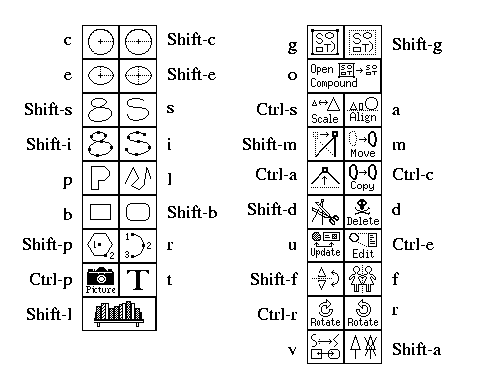

It is also possible to use accelerators on some of the popup panels. See the description about each popup panel for more information.
Menu Accelerators:
![[Menu Accelerators]](images/menu-accel.gif)
File Menu Accelerators:
(Meta-F)
![[File Menu Accelerators]](images/file-accel.gif)
Note that pressing the number 1 while the file menu is up will load the file /tmp/sample.fig in the above example.
Edit Menu Accelerators:
(Meta-E)
![[Edit Menu Accelerators]](images/edit-accel.gif)
View Menu Accelerators:
(Meta-V)
![[View Menu Accelerators]](images/view-accel.gif)
Help Menu Accelerators:
(Meta-H)
![[Help Menu]](images/help-accel.gif)
Drawing and Editing Mode Accelerators:
